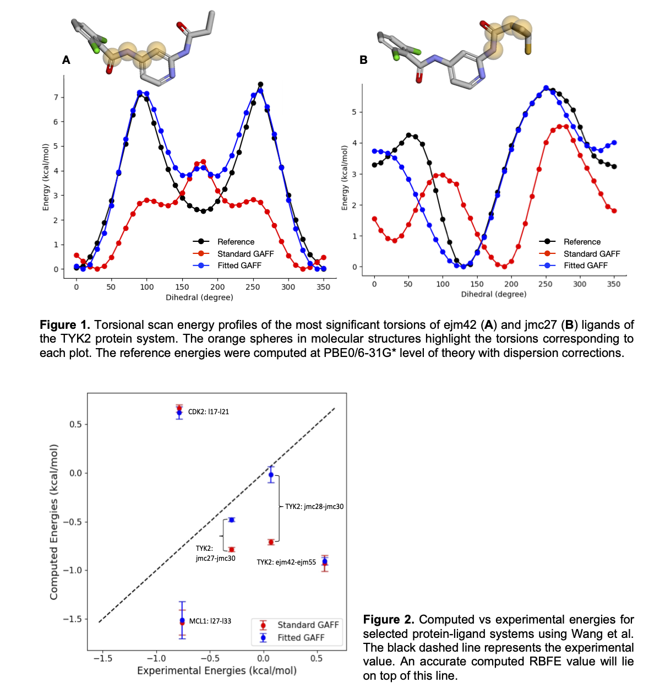

Accuracy and Performance
The data presented in this section were initially obtained using a previous version of AFFDO and have been further extended using the latest version, AFFDO-24.09. See the details below.
Note The code is continuously being improved. Please make sure to use the latest AFFDO version.
We have validated the accuracy of AFFDO using a protein-ligand dataset reported by Wang et al. [1]. In this dataset, the authors report the experimental relative binding free energies (RBFE) values for a series of protein-ligand systems. For the validation study, a subset of these systems was selected, and RBFE simulations were carried out using the Amber Drug Discovery Boost package [2]. The standard GAFF (GAFF 2.11) force field was used for ligands, the ff14SB parameter set was used for proteins, and the TIP4P model was used for water. The computed RBFE values using GAFF were compared against the experimental values; protein-ligand systems that displayed >1.0 kcal/mol error (the chemical accuracy threshold) were identified to test and validate AFFDO. Each ligand was used as input to the workflow, and force fields with optimized dihedral parameters were obtained for each ligand. The time taken for the full reparameterization process varied from 3 to 48 hours, depending on the system size, atom types, and hardware being used.
In Figure 1, we present the torsional scan energy profiles for the most significant torsions of TYK2 ejm42 (A) and jmc27 (B). The GAFF2 energy profile (Standard GAFF) of the former mostly differs from the reference profile by barrier height. In contrast, the latter not only differs in barrier height, but also in phase. Using the AFFDO platform, both the phase and barrier height can be fitted, resulting in much tighter fits to the reference profiles (Fitted GAFF). After reparameterization, fitted force field parameters were used to recompute RBFE values for protein-ligand pairs. As depicted in Figure 2, the reparameterized GAFF force field improves the computed RBFE for all systems. For certain systems (e.g., TYK2 jmc28-jmc30, jmc27-jmc30), this improvement is more prominent than in others.
We have extended these validations using our latest version AFFDO-24.09 in our manuscript [3], where we benchmark AFFDO against a wider range of drug-like molecules with complex torsions. The results further demonstrate that AFFDO can significantly improve GAFF torsion parameters, leading to more accurate free energy predictions across different chemical environments.
[1] Wang, L., Wu, Y., Deng, Y., et al. (2015). Accurate and reliable prediction of relative ligand binding potency in prospective drug discovery by way of a modern free-energy calculation protocol and force field. Journal of the American Chemical Society, 137(7), 2695-2703.
[2] Ganguly, A., Tsai, H. C., Fernández-Pendás, M., Lee, T. S., Giese, T. J., & York, D. M. (2022). AMBER Drug Discovery Boost Tools: Automated Workflow for Production Free-Energy Simulation Setup and Analysis (ProFESSA). Journal of Chemical Information and Modeling, 62(23), 6069-6083.
[3] Blanco-Gonzalez, A., Betancourt, W., Snyder, R., Zhang, S., Giese, T. J., Goetz, A. W., Merz, K. M. Jr., York, D. M., Aktulga, H. M., Manathunga, M. (2024). Automated Force Field Developer and Optimizer Platform: Torsion Reparameterization. ChemRxiv. doi:10.26434/chemrxiv-2024-lcnx1.
Last updated on 10/24/2024.